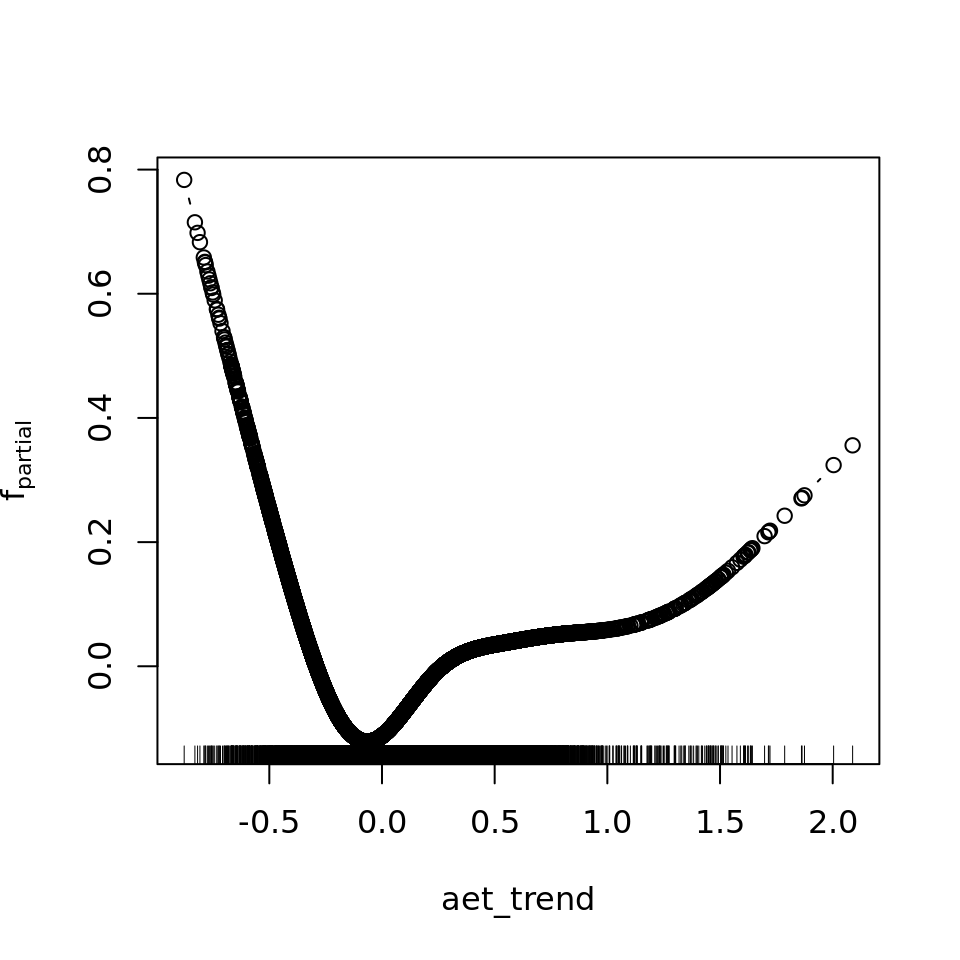
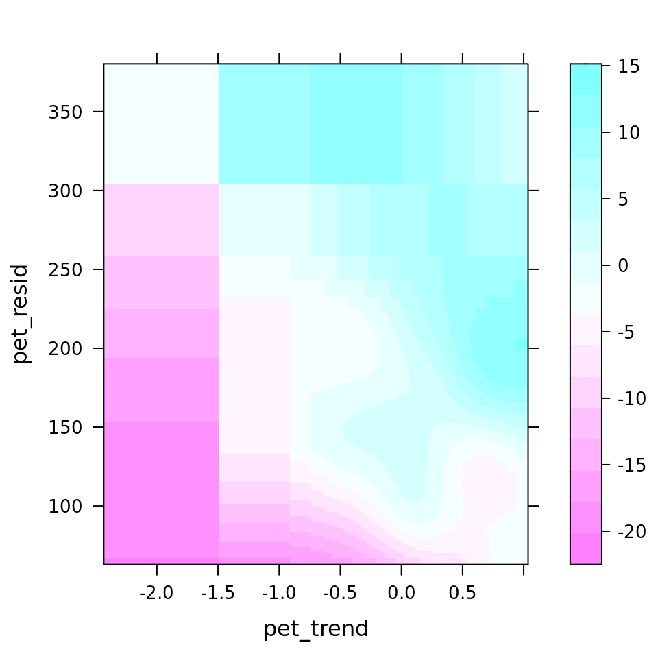
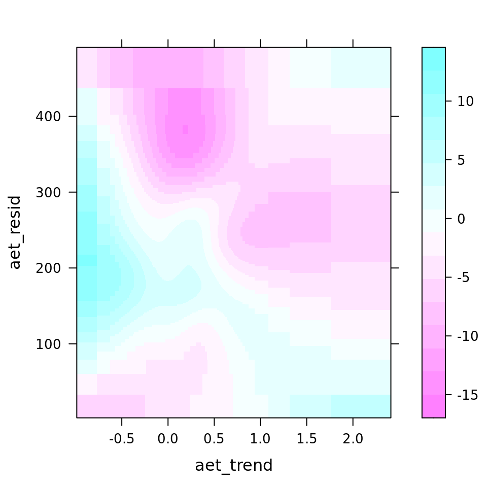
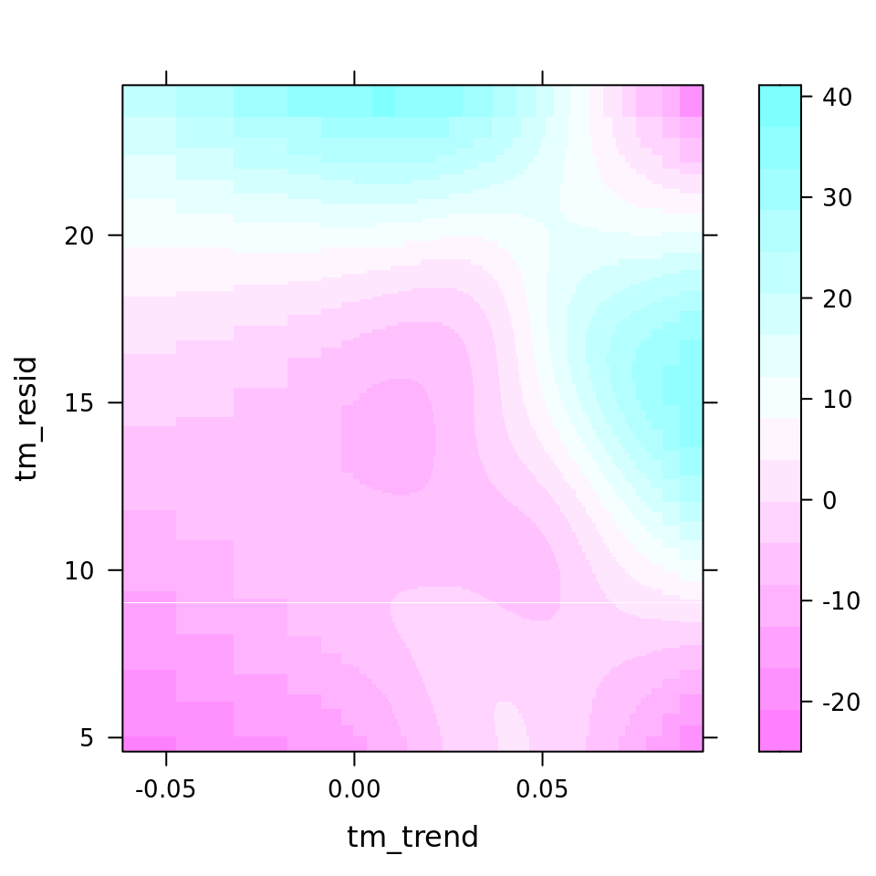

6 Model assemblage trends
In previous chapters we have prepared a dataset for modelling, which we can now start to use.
6.1 Correlation among predictors
We first assess correlations among predictors. As we also intend to compare models using environmental predictability with those of long-term trends we separate the correlation matrices for both.
6.1.1 Pearson’s correlation matrix
unused_predictors <- c("count_long", "count_short",
"def", "tmmx", "tmmn", "aet", "pet", "pr", "ndvi", "x", "y",
lut$ecoregions, lut$biomes, lut$realms)
predictors <- colnames(data)[!colnames(data) %in% unused_predictors]
predictors_trends <- c("trend_long", "trend_short", colnames(dplyr::select(data, ends_with("_trend"))))
predictors_resids <- c("trend_long", "trend_short", colnames(dplyr::select(data, ends_with("_resid"))))
predictors_all <- c(predictors_trends, predictors_resids)
ggcorrmat(data, cor.vars = all_of(predictors_trends), type = "parametric")
ggcorrmat(data, cor.vars = all_of(predictors_resids), type = "parametric")
ggcorrmat(data, cor.vars = all_of(predictors_all), type = "parametric")This indicates environmental residuals are generally correlated more strongly than long-term trends. Of the covariates, def, tmmx and tmmn are most strongly correlated with each other or other variables. We can reduce correlation for temperature measures by calculating the average temperature from both tmmx and tmmn and will remove def from our modeling dataset.
data %>%
mutate(tm_resid = rowMeans(dplyr::select(., tmmn_resid, tmmx_resid)),
tm_trend = rowMeans(dplyr::select(., tmmn_trend, tmmx_trend))) %>%
ungroup() %>%
identity() -> data
predictors_trends <- c(predictors_trends[!predictors_trends %in% c("tmmx_trend", "tmmn_trend", "def_trend")], "tm_trend")
predictors_resids <- c(predictors_resids[!predictors_resids %in% c("tmmx_resid", "tmmn_resid", "def_resid")], "tm_resid")
predictors_all <- c(predictors_trends, predictors_resids)And we calculate a new correlation matrix.
ggcorrmat(data, cor.vars = all_of(predictors_trends), type = "parametric", maxtrix.type = "upper")
ggcorrmat(data, cor.vars = all_of(predictors_resids), type = "parametric", maxtrix.type = "upper")
ggcorrmat(data, cor.vars = all_of(predictors_all), type = "parametric", maxtrix.type = "upper")Let’s calculate how trends and variability of the same variable are correlated.
ggcorrmat(data, cor.vars = all_of(predictors_all), type = "parametric", output = "dataframe") %>%
rowwise() %>%
mutate(var1 = str_split(parameter1, "_", simplify = TRUE)[[1]],
var2 = str_split(parameter2, "_", simplify = TRUE)[[1]]) %>%
ungroup() %>%
filter(var1 == var2, var1 != "trend") -> corr_trend_var
corr_trend_var[, c("parameter1", "parameter2", "r", "ci_low", "ci_high", "p")]| parameter1 | parameter2 | r | ci_low | ci_high | p |
|---|---|---|---|---|---|
| ndvi_trend | ndvi_resid | 0.2932629 | 0.2900672 | 0.2964521 | 0 |
| pr_trend | pr_resid | 0.2207327 | 0.2174075 | 0.2240529 | 0 |
| pet_trend | pet_resid | -0.1890657 | -0.1924315 | -0.1856955 | 0 |
| aet_trend | aet_resid | 0.2944051 | 0.2912117 | 0.2975920 | 0 |
| tm_trend | tm_resid | 0.2422414 | 0.2389507 | 0.2455266 | 0 |
So, clearly, these are only weakly positively correlated, with the exception of pet potential evapotranspiration. The mean Pearson’s r for the correlation between environmental trends and respective variability is only 0.1723153.
We continue to see strong correlation between pr_resid and ndvi_resid, but Pearson correlation coefficients are < 0.7, and as both original variables (ndvi and pr) are effectively uncorrelated in ndvi_trend and pr_trend and we want the trends and predictability model to be comparable, we keep both in.
6.2 Pairplot
While we’re at it, it’s useful to make a pairplot of all predictor variables.
set.seed(42)
data %>%
slice_sample(n = 1000) -> data_tiny
ggpairs(data_tiny, columns = all_of(c(predictors_trends)), progress = FALSE)
ggpairs(data_tiny, columns = all_of(c(predictors_resids)), progress = FALSE)6.3 Optimal dataset size
The current dataset contains 314868 rows of data, which is quite large for fast and efficient ML workflows. We will first determine how the performance of a few suitable learners depends on dataset size and then determine an optimal balance between model performance and dataset size. In other words, we determine at what point increasing the dataset size (the resampled fraction) does not improve the model performance substantially anymore. Rather than optimizing this in several steps, we will tune the hyperparameter subsample.frac by constructing a GraphLearner objects in an mlr3 pipeline which tunes dataset size. The following chunk implements this procedure. As it may take very long to run, it’s more convenient to run it only when strictly necessary from the R/hyperparm_subsample_frac.R file. As we can use this procedure to test suitable ML learners, we use mboost::gamboost, gbm::gbm and xgboost::xgboost learners in our GraphLearner.
task <- TaskRegrST$new(id = "data", backend = data, target = "trend_long", extra_args = list(coordinate_names = c("x", "y")))
task$select(all_of(predictors))
learners <- list(
lrn("regr.gamboost", id = "gamboost"),
lrn("regr.gbm", id = "gbm"),
lrn("regr.xgboost", id = "xgboost")
)
learners_ids <- sapply(learners, function(x) x$id)
gr_subsample <- po("subsample") %>>%
po("branch", options = learners_ids) %>>%
gunion(lapply(learners, po)) %>>%
po("unbranch")
grlrn_subsample <- GraphLearner$new(gr_subsample)
min_nrows <- 100
max_nrows <- 50000
min_nrows_s <- log10(min_nrows) / log10(2)
max_nrow_s <- log10(max_nrows) / log10(2)
ps_subsample <- ParamSet$new(list(
ParamDbl$new("subsample.frac", lower = min_nrows_s, upper = max_nrow_s),
ParamFct$new("branch.selection", levels = learners_ids)
))
# Distribution of subsample.frac in grid can be visualised as follows
# x <- seq(from = min_nrows_s, to = max_nrow_s, length.out = 20)
# y <- 2^x
# plot(x, y)
# Beware: division by nrow(data) has to be hard-coded in the function below, somehow...
ps_subsample$trafo <- function(x, param_set) {
x$subsample.frac <- (2^x$subsample.frac) / 314868
return(x)
}
resample_inner <- rsmp("cv", folds = 5)
resample_outer <- rsmp("cv", folds = 5)
measure <- msr("regr.rmse")
terminator <- trm("none")
tuner <- tnr("grid_search", resolution = 20)
at <- AutoTuner$new(
learner = grlrn_subsample,
resampling = resample_inner,
measure = measure,
search_space = ps_subsample,
terminator = terminator,
tuner = tuner,
store_tuning_instance = TRUE,
store_benchmark_result = TRUE
)
future::plan("multisession", workers = 3)
rr <- resample(task = task, learner = at, resampling = resample_outer, store_models = TRUE)
saveRDS(as.data.table(rr), file = "data/processed/rr_dataset_size.RDS")
rr_data <- bind_rows(lapply(rr$learners, function(x) x$model$tuning_instance$archive$data()))
saveRDS(rr_data, file = "data/processed/rr_dataset_size_df.RDS")We can now plot the results of the previous workflow and see how cross-validated model performance depends on the subsampled size of the training dataset.
if (!exists("rr_data")) rr_data <- readRDS("data/processed/rr_dataset_size_df.RDS")
rr_data %>%
group_by(branch.selection, subsample.frac) %>%
summarise(mean_rmse = mean(regr.rmse),
q05 = quantile(regr.rmse, 0.05),
q95 = quantile(regr.rmse, 0.95),
.groups = "drop_last") %>%
ungroup() %>%
mutate(nrows = 2^subsample.frac) %>%
rename(Learner = branch.selection) %>%
ggplot(aes(color = Learner, fill = Learner)) +
geom_path(aes(x = nrows, y = mean_rmse)) +
geom_ribbon(aes(x = nrows, ymin = q05, ymax = q95), alpha = 0.5) +
scale_x_continuous(trans = "log10", breaks = c(100, 500, 1000, 5000, 10000, 50000)) +
labs(x = "Subsample size (# rows)", y = "Model RMSE")It is clear beyond 10,000 rows performance only continues to improve marginally for untuned xgboost learners and model improvement for the other learners has clearly hit a plateau. So, we can stick to resampling 10,000 rows from the 314868 rows in the original dataframe for our continued statistical modelling.
nrow_subsample <- 100006.4 Modeling assemblage trends
We can now finally start to model long-term assemblage trends using a 10^{4}-row subsample of the original dataset. We use a gamboost model as it strikes a balance between predictive accuracy and interpretability, without introducing a lot of ‘jaggedness’ of boosted regression trees (e.g. from gbm and xgboost) that hamper interpretability to those unfamiliar with the data.
6.4.1 Data filtering
Exploratory modeling showed that model errors are largest in the Sahara. As only few species included in our assemblage trends inhabit this area, the assemblage trend is also least reliable (i.e. it is composed of population trends of few species). It thus makes sense to exclude these areas. We set a minimum number of species that contribute to an assemblage trend to >5 and limit our analysis strictly to the areas south of the Sahara, which is the Afrotropic realm in our ecoregion dataset. To illustrate this, let’s plot the number of species that are included in the assemblage trends.
set.seed(42)
data %>%
slice_sample(n = nrow_subsample) %>%
mutate(included = if_else((count_long > 5 & Afrotropic == 1), 1, 0, 0)) %>%
as.data.frame() -> data_subset
xlim <- c(-20, 60)
ylim <- c(-40, 40)
clim <- c(min(data_subset$count_long), max(data_subset$count_long))
ggplot(data_subset, aes(x = x, y = y, color = count_long)) +
geom_point() +
scale_color_viridis_c(limits = clim) +
labs(subtitle = "Original data",
x = "Longitude", y = "Latitude", color = "# species") +
theme(legend.position = "bottom") +
coord_fixed(xlim = xlim, ylim = ylim) -> original
data_subset %>%
filter(included == 1) %>%
ggplot(aes(x = x, y = y, color = count_long)) +
geom_point() +
scale_color_viridis_c(limits = clim) +
labs(subtitle = "Filtered data",
x = "Longitude", y = "Latitude", color = "# species") +
theme(legend.position = "bottom") +
coord_fixed(xlim = xlim, ylim = ylim) -> filtered
original + filtered + plot_annotation(title = "Species in long-term assemblage trend") +
plot_layout(guides = "collect") & theme(legend.position = "bottom")6.4.2 Training boosted GAMs
The training of boosted GAMs (implemented in mboost) will go as follows:
- We train models predicting long term assemblage trends using long-term (linear) trends in environmental predictors and environmental predictability (model residuals from harmonic regression).
- We then determine the optimal number of boosting iterations using 10-fold cross-validation, as implemented in the
cvriskfunction, varying the number of boosts between 250 and 30000. - We calculate the autocovariate of the residuals to correct for (strong) effects of spatial autocorrelation,4 which violates the independence assumption of regression.
- We retrain the model but now whilst including the residual autocovariate as a parameter.
- We, once again, determine the optimal number of boosting iterations on the new models. Most likely this does not differ substantially from the previous optimum, but it is good to make sure that is the case.
Let’s start with training the models.
set.seed(42)
data %>%
filter(count_long > 5,
Afrotropic == 1) %>%
slice_sample(n = nrow_subsample) %>%
as.data.frame() -> data_subset
saveRDS(data_subset, file = "data/processed/data_subset.RDS")
model_formula <- function(predictors, response, interactions = FALSE) {
formula <- paste0(response, " ~ ", paste0("bbs(", predictors, ")", collapse = " + "))
if (interactions) {
envir_vars <- unlist(unique(lapply(str_split(predictors, "_"), function(x) x[[1]])))
interactions <- lapply(envir_vars, function(x) {
paste0("bspatial(", predictors[str_starts(predictors, paste0(x, "_"))][1], ", ",
predictors[str_starts(predictors, paste0(x, "_"))][2], ")")
})
formula <- paste0(formula, " + ", paste0(interactions, collapse = " + "))
}
formula <- as.formula(formula)
return(formula)
}
formula_trends <- model_formula(predictors_trends[!predictors_trends %in% c("trend_long", "trend_short")], "trend_long")
formula_resids <- model_formula(predictors_resids[!predictors_resids %in% c("trend_long", "trend_short")], "trend_long")
formula_all <- model_formula(predictors_all[!predictors_all %in% c("trend_long", "trend_short")], "trend_long",
interactions = TRUE)
ctrl <- boost_control(trace = FALSE, mstop = 10000)
mod_trends <- gamboost(formula_trends, data = data_subset, family = Gaussian(), control = ctrl)
mod_resids <- gamboost(formula_resids, data = data_subset, family = Gaussian(), control = ctrl)
mod_all <- gamboost(formula_all, data = data_subset, family = Gaussian(), control = ctrl)
saveRDS(mod_trends, file = "data/processed/models/mod_trends.RDS")
saveRDS(mod_resids, file = "data/processed/models/mod_resids.RDS")
saveRDS(mod_all, file = "data/processed/models/mod_all.RDS")6.4.2.1 Determine the optimal number of boosting iterations
Having trained the models, we can now determine the optimal number of boosting iterations. As this is a time-consuming process, the chunk below does not run by default and it’s probably best to run this cross-validation procedure separately through the dedicated R/hyperparm_mboost_mstop.R script.
grid <- seq(from = 250, to = 30000, by = 250)
cv10f_trends <- cv(model.weights(mod_trends), type = "kfold")
saveRDS(cv10f_trends, file = "data/processed/models/cv10f_trends.RDS")
cvm_trends <- cvrisk(mod_trends, folds = cv10f_trends, grid = grid)
saveRDS(cvm_trends, file = "data/processed/models/cvm_trends.RDS")
cv10f_resids <- cv(model.weights(mod_resids), type = "kfold")
saveRDS(cv10f_resids, file = "data/processed/models/cv10f_resids.RDS")
cvm_resids <- cvrisk(mod_resids, folds = cv10f_resids, grid = grid)
saveRDS(cvm_resids, file = "data/processed/models/cvm_resids.RDS")
cv10f_all <- cv(model.weights(mod_all), type = "kfold")
saveRDS(cv10f_all, file = "data/processed/models/cv10f_all.RDS")
cvm_all <- cvrisk(mod_all, folds = cv10f_all, grid = grid)
saveRDS(cvm_all, file = "data/processed/models/cvm_all.RDS")We can load the results and plot the outputs.
cvm_trends <- readRDS("data/processed/models/cvm_trends.RDS")
cvm_resids <- readRDS("data/processed/models/cvm_resids.RDS")
cvm_all <- readRDS("data/processed/models/cvm_all.RDS")
plot_cvm <- function(cvm, plot_id = "") {
m <- cvm
class(m) <- NULL
as.data.frame(m) %>%
rownames_to_column(var = "fold") %>%
pivot_longer(-c(fold), names_to = "boosts", values_to = "risk") %>%
mutate(boosts = as.numeric(boosts),
fold = as.factor(fold)) %>%
identity() %>%
ggplot(aes(x = boosts, y = risk, group = fold, color = fold)) +
geom_line() +
labs(title = paste0(attr(cvm, "type"), ": ", plot_id), x = "boosts (mstop)", y = attr(cvm, "risk"))
}
plot_cvm_trends <- plot_cvm(cvm_trends, "trends")
plot_cvm_resids <- plot_cvm(cvm_resids, "resids")
plot_cvm_all <- plot_cvm(cvm_all, "all")
plot_cvm_trends + plot_cvm_resids + plot_cvm_all + plot_layout(guides = "collect") & theme(legend.position = "bottom")We can see that most cross-validated models seem to show stagnating model improvement beyond 10000 boosts, while an optimum is mostly not reached before 30000 boosts. Given the stagnating improvement, limited compute time and no need to optimize predictive performance ad infinitum, we limit the number of boosts to 10000.
6.4.2.2 Correct for spatial autocorrelation
A quick plot of model residuals will show there is strong spatial autocorrelation in the residuals, violating the independence assumption of regression modelling.
if (!exists("mod_trends")) mod_trends <- readRDS("data/processed/models/mod_trends.RDS")
if (!exists("mod_resids")) mod_resids <- readRDS("data/processed/models/mod_resids.RDS")
if (!exists("mod_all")) mod_all <- readRDS("data/processed/models/mod_all.RDS")
data_subset$norac_trends <- resid(mod_trends)
data_subset$norac_resids <- resid(mod_resids)
data_subset$norac_all <- resid(mod_all)
data_subset %>%
dplyr::select(x, y, norac_trends, norac_resids, norac_all) %>%
rename(c(Predictability = norac_resids, Trends = norac_trends, `All predictors` = norac_all)) %>%
pivot_longer(-c(x, y), names_to = "model", values_to = "residuals") %>%
ggplot(aes(x = x, y = y, color = residuals)) +
geom_point() +
scale_color_gradient2() +
coord_fixed() +
facet_wrap(vars(model)) +
labs(title = "Spatial pattern of model residuals", x = "Longitude", y = "Latitude", color = "Residual")There’s no need to even quantify spatial autocorrelation (SAC) in residuals here, as it’s so obvious. We will correct for it using the residual autocovariate method introduced by Crase et al. 4. We calculate the autocovariate of the residuals using a neighborhood radius of 100 kilometers. This radius could be optimized to reflect actual SAC distances in our dataset, but for now it seems sufficient to dramatically reduce residual SAC.
neighborhood_dist <- 100 # Kilometers if longlat = TRUE
acov_trends <- autocov_dist(resid(mod_trends), as.matrix(cbind(data_subset$x, data_subset$y)), longlat = TRUE,
nbs = neighborhood_dist, zero.policy = TRUE)## Warning in autocov_dist(resid(mod_trends), as.matrix(cbind(data_subset$x, : With
## value 100 some points have no neighbours## Warning in nb2listw(nb, glist = gl, style = style, zero.policy = zero.policy):
## zero sum general weights
acov_resids <- autocov_dist(resid(mod_resids), as.matrix(cbind(data_subset$x, data_subset$y)), longlat = TRUE,
nbs = neighborhood_dist, zero.policy = TRUE)## Warning in autocov_dist(resid(mod_resids), as.matrix(cbind(data_subset$x, : With
## value 100 some points have no neighbours
## Warning in autocov_dist(resid(mod_resids), as.matrix(cbind(data_subset$x, : zero
## sum general weights
acov_all <- autocov_dist(resid(mod_all), as.matrix(cbind(data_subset$x, data_subset$y)), longlat = TRUE,
nbs = neighborhood_dist, zero.policy = TRUE)## Warning in autocov_dist(resid(mod_all), as.matrix(cbind(data_subset$x,
## data_subset$y)), : With value 100 some points have no neighbours
## Warning in autocov_dist(resid(mod_all), as.matrix(cbind(data_subset$x,
## data_subset$y)), : zero sum general weightsThe chunk above may throw some warnings if some points are not within 100 kilometers from other points, but that will most certainly not be many points in our dataset, so we can accept that some of these autocovariates are not as accurate as others.
Now we will add the calculated autocovariates of residuals to our earlier dataset and retrain the models.
data_subset$autocov_trends <- acov_trends
data_subset$autocov_resids <- acov_resids
data_subset$autocov_all <- acov_all
formula_rac <- function(formula, var) {
as.formula(paste0(paste(formula[2], formula[3], sep = " ~ "), " + bbs(", var, ")"))
}
formula_trends <- formula_rac(formula_trends, "autocov_trends")
formula_resids <- formula_rac(formula_resids, "autocov_resids")
formula_all <- formula_rac(formula_all, "autocov_all")
ctrl <- boost_control(trace = FALSE, mstop = 10000)
mod_trends_rac <- gamboost(formula_trends, data = data_subset, family = Gaussian(), control = ctrl)
mod_resids_rac <- gamboost(formula_resids, data = data_subset, family = Gaussian(), control = ctrl)
mod_all_rac <- gamboost(formula_all, data = data_subset, family = Gaussian(), control = ctrl)
saveRDS(mod_trends_rac, file = "data/processed/models/mod_trends_rac.RDS")
saveRDS(mod_resids_rac, file = "data/processed/models/mod_resids_rac.RDS")
saveRDS(mod_all_rac, file = "data/processed/models/mod_all_rac.RDS")And now let’s reassess residual autocorrelation from our retrained model. If all went well, that should be visibly and substantially less than before.
if (!exists("mod_trends_rac")) mod_trends_rac <- readRDS("data/processed/models/mod_trends_rac.RDS")
if (!exists("mod_resids_rac")) mod_resids_rac <- readRDS("data/processed/models/mod_resids_rac.RDS")
if (!exists("mod_all_rac")) mod_all_rac <- readRDS("data/processed/models/mod_all_rac.RDS")
data_subset$rac_trends <- resid(mod_trends_rac)
data_subset$rac_resids <- resid(mod_resids_rac)
data_subset$rac_all <- resid(mod_all_rac)
data_subset %>%
dplyr::select(x, y, rac_trends, rac_resids, rac_all) %>%
rename(c(Predictability = rac_resids, Trends = rac_trends, `All predictors` = rac_all)) %>%
pivot_longer(-c(x, y), names_to = "model", values_to = "residuals") %>%
ggplot(aes(x = x, y = y, color = residuals)) +
geom_point() +
scale_color_gradient2() +
coord_fixed() +
facet_wrap(vars(model)) +
labs(title = "Spatial pattern of model residuals", subtitle = "after including residual autocovariates",
x = "Longitude", y = "Latitude", color = "Residual")That is much better!
6.4.2.3 Determine the optimal number of boosting iterations of RAC model
Once again, we should make sure the number of boosts used (10000) is ‘optimal’ in our newly trained model. As before, it’s probably best to run this using the dedicated file in R/hyperparm_mboost_mstop.R, but the chunk below can do it as well.
grid <- seq(from = 250, to = 30000, by = 250)
cv10f_trends_rac <- cv(model.weights(mod_trends_rac), type = "kfold")
saveRDS(cv10f_trends_rac, file = "data/processed/models/cv10f_trends_rac.RDS")
cvm_trends_rac <- cvrisk(mod_trends_rac, folds = cv10f_trends_rac, grid = grid)
saveRDS(cvm_trends_rac, file = "data/processed/models/cvm_trends_rac.RDS")
cv10f_resids_rac <- cv(model.weights(mod_resids_rac), type = "kfold")
saveRDS(cv10f_resids_rac, file = "data/processed/models/cv10f_resids_rac.RDS")
cvm_resids_rac <- cvrisk(mod_resids_rac, folds = cv10f_resids_rac, grid = grid)
saveRDS(cvm_resids_rac, file = "data/processed/models/cvm_resids_rac.RDS")
cv10f_all_rac <- cv(model.weights(mod_all_rac), type = "kfold")
saveRDS(cv10f_all_rac, file = "data/processed/models/cv10f_all_rac.RDS")
cvm_all_rac <- cvrisk(mod_all_rac, folds = cv10f_all_rac, grid = grid)
saveRDS(cvm_all_rac, file = "data/processed/models/cvm_all_rac.RDS")We can load these results as well and plot the outputs.
cvm_trends_rac <- readRDS("data/processed/models/cvm_trends_rac.RDS")
cvm_resids_rac <- readRDS("data/processed/models/cvm_resids_rac.RDS")
cvm_all_rac <- readRDS("data/processed/models/cvm_all_rac.RDS")
plot_cvm <- function(cvm, plot_id = "") {
m <- cvm
class(m) <- NULL
as.data.frame(m) %>%
rownames_to_column(var = "fold") %>%
pivot_longer(-c(fold), names_to = "boosts", values_to = "risk") %>%
mutate(boosts = as.numeric(boosts),
fold = as.factor(fold)) %>%
identity() %>%
ggplot(aes(x = boosts, y = risk, group = fold, color = fold)) +
geom_line() +
labs(title = paste0(attr(cvm, "type"), ": ", plot_id), x = "boosts (mstop)", y = attr(cvm, "risk"))
}
plot_cvm_trends_rac <- plot_cvm(cvm_trends_rac, "trends")
plot_cvm_resids_rac <- plot_cvm(cvm_resids_rac, "resids")
plot_cvm_all_rac <- plot_cvm(cvm_all_rac, "all")
plot_cvm_trends_rac + plot_cvm_resids_rac + plot_cvm_all_rac +
plot_layout(guides = "collect") & theme(legend.position = "bottom")Although model improvement did not stagnate as fast in this model, stopping boosting iterations at 10000 boosts again continues to remain reasonable. We could increase it to 20000, but that would (probably) at least double the time required for bootstrapping to quantify model uncertainty in further steps. As predictive performance is not the ultimate goal of this analysis, that trade-off is fine.
6.4.2.4 Quantifying residual autocorrelation
Now is a good moment to quantify residual autocorrelation (RSAC) in our model. We do so by calculating Moran’s I across a number of distance classes (8) using the sp.correlogram function from the spdep package. As this is computationally very intensive, we run this calculation once in the chunk below and save the results for fast plotting during knitting of this document.
nclass <- 8 # Number of distance classes
neighbors <- dnearneigh(as.matrix(cbind(data_subset$x, data_subset$y)), d1 = 0, d2 = neighborhood_dist, longlat = TRUE)
spc_norac_trends <- sp.correlogram(neighbors, data_subset$norac_trends, order = nclass, method = "I", zero.policy = TRUE)
spc_norac_resids <- sp.correlogram(neighbors, data_subset$norac_resids, order = nclass, method = "I", zero.policy = TRUE)
spc_norac_all <- sp.correlogram(neighbors, data_subset$norac_all, order = nclass, method = "I", zero.policy = TRUE)
spc_rac_trends <- sp.correlogram(neighbors, data_subset$rac_trends, order = nclass, method = "I", zero.policy = TRUE)
spc_rac_resids <- sp.correlogram(neighbors, data_subset$rac_resids, order = nclass, method = "I", zero.policy = TRUE)
spc_rac_all <- sp.correlogram(neighbors, data_subset$rac_all, order = nclass, method = "I", zero.policy = TRUE)
saveRDS(spc_norac_trends, file = "data/processed/models/spc_norac_trends.RDS")
saveRDS(spc_norac_resids, file = "data/processed/models/spc_norac_resids.RDS")
saveRDS(spc_norac_all, file = "data/processed/models/spc_norac_all.RDS")
saveRDS(spc_rac_trends, file = "data/processed/models/spc_rac_trends.RDS")
saveRDS(spc_rac_resids, file = "data/processed/models/spc_rac_resids.RDS")
saveRDS(spc_rac_all, file = "data/processed/models/spc_rac_all.RDS")And we can now plot the RSAC correlograms.
if (!exists("spc_norac_trends")) spc_norac_trends <- readRDS("data/processed/models/spc_norac_trends.RDS")
if (!exists("spc_norac_resids")) spc_norac_resids <- readRDS("data/processed/models/spc_norac_resids.RDS")
if (!exists("spc_norac_all")) spc_norac_all <- readRDS("data/processed/models/spc_norac_all.RDS")
if (!exists("spc_rac_trends")) spc_rac_trends <- readRDS("data/processed/models/spc_rac_trends.RDS")
if (!exists("spc_rac_resids")) spc_rac_resids <- readRDS("data/processed/models/spc_rac_resids.RDS")
if (!exists("spc_rac_all")) spc_rac_all <- readRDS("data/processed/models/spc_rac_all.RDS")
par(mfrow = c(2, 3))
plot(spc_norac_trends, main = "RSAC Trends mdl")
plot(spc_norac_resids, main = "RSAC Predictability mdl")
plot(spc_norac_all, main = "RSAC All preds mdl")
plot(spc_rac_trends, main = "RSAC Trends RAC mdl")
plot(spc_rac_resids, main = "RSAC Predictability RAC mdl")
plot(spc_rac_all, main = "RSAC All preds RAC mdl")Adding the autocovariate of residuals seems to have helped a lot to counter residual spatial autocorrelation. It’s possible this can be improved further by tweaking the radius of the neighborhood over which the autocovariate is calculated, but that’s some tweaking we can do later.
6.4.3 Model outputs
6.4.3.1 Model performance
We use good ol’ RMSE, % of deviance explained and Moran’s I to compare the performance of all these models.
perf_metrics <- function(actual, models) {
rmse <- lapply(models, function(x) rmse(actual, predict(x)))
deviance_explained <- lapply(models, function(x) (1 - (tail(risk(x), 1) / head(risk(x), 1))) * 100)
m <- rbind(rmse, deviance_explained)
mode(m) <- "numeric"
m
}
residual_columns <- c("norac_trends", "norac_resids", "norac_all", "rac_trends", "rac_resids", "rac_all")
if (!exists("neighbors")) {
neighbors <- dnearneigh(as.matrix(cbind(data_subset$x, data_subset$y)), d1 = 0, d2 = neighborhood_dist, longlat = TRUE)
}
sar_metrics <- lapply(residual_columns, function(x) {
mi <- moran.test(data_subset[, x], nb2listw(neighbors, zero.policy = TRUE), zero.policy = TRUE)
c(round(mi$estimate[1], 2), mi$p.value)
})
sar_metrics <- data.frame(matrix(unlist(sar_metrics), ncol = length(sar_metrics)))
pm <- as.data.frame(perf_metrics(data_subset$trend_long,
list(mod_trends, mod_resids, mod_all, mod_trends_rac, mod_resids_rac, mod_all_rac)))
colnames(sar_metrics) <- colnames(pm)
pm <- rbind(pm, sar_metrics)
colnames(pm) <- c("mod_trends", "mod_resids", "mod_all", "mod_trends_rac", "mod_resids_rac", "mod_all_rac")
rownames(pm) <- c("RMSE", "% Deviance explained", "Moran's I", "Moran's I test p-val")
pm <- as.data.frame(t(pm))
pm| RMSE | % Deviance explained | Moran’s I | Moran’s I test p-val | |
|---|---|---|---|---|
| mod_trends | 16.820661 | 28.84072 | 0.83 | 0 |
| mod_resids | 13.346926 | 55.19692 | 0.73 | 0 |
| mod_all | 11.230939 | 68.27676 | 0.64 | 0 |
| mod_trends_rac | 6.834131 | 88.25341 | 0.24 | 0 |
| mod_resids_rac | 6.227944 | 90.24483 | 0.18 | 0 |
| mod_all_rac | 5.869456 | 91.33555 | 0.13 | 0 |
6.4.3.2 Variable importance
We can quantify the importance of variables within our model using the varimp function of the mboost package. This returns variable importance, a measure of the total improvement to model deviance a variable is responsible for. This is weighted by the number of times a predictor is selected in the boosted models.
6.4.3.2.1 Trends model
plot(varimp(mod_trends_rac), main = "Varimp Trends RAC mdl")
as.data.frame(varimp(mod_trends_rac)) %>%
arrange(desc(reduction)) %>%
mutate(imp = reduction / sum(reduction) * 100,
imp_biol = if_else(str_detect(blearner, "autocov"), 0, imp),
imp_biol = round((imp_biol / sum(imp_biol) * 100), 2),
imp = round(imp, 2))| reduction | blearner | variable | selfreq | imp | imp_biol |
|---|---|---|---|---|---|
| 269.422461 | bbs(autocov_trends) | autocov_trends | 0.2410 | 76.78 | 0.00 |
| 46.902638 | bbs(tm_trend) | tm_trend | 0.2565 | 13.37 | 57.56 |
| 21.384352 | bbs(pr_trend) | pr_trend | 0.1996 | 6.09 | 26.24 |
| 4.796977 | bbs(aet_trend) | aet_trend | 0.1274 | 1.37 | 5.89 |
| 4.594185 | bbs(pet_trend) | pet_trend | 0.1399 | 1.31 | 5.64 |
| 3.801587 | bbs(ndvi_trend) | ndvi_trend | 0.0356 | 1.08 | 4.67 |
6.4.3.2.2 Predictability model
plot(varimp(mod_resids_rac), main = "Varimp Predictability RAC mdl")
as.data.frame(varimp(mod_resids_rac)) %>%
arrange(desc(reduction)) %>%
mutate(imp = reduction / sum(reduction) * 100,
imp_biol = if_else(str_detect(blearner, "autocov"), 0, imp),
imp_biol = round((imp_biol / sum(imp_biol) * 100), 2),
imp = round(imp, 2))| reduction | blearner | variable | selfreq | imp | imp_biol |
|---|---|---|---|---|---|
| 177.3754837 | bbs(autocov_resids) | autocov_resids | 0.1691 | 49.43 | 0.00 |
| 94.7949396 | bbs(ndvi_resid) | ndvi_resid | 0.5856 | 26.42 | 52.24 |
| 57.5502643 | bbs(tm_resid) | tm_resid | 0.0712 | 16.04 | 31.72 |
| 17.5826413 | bbs(pet_resid) | pet_resid | 0.0631 | 4.90 | 9.69 |
| 10.6466394 | bbs(aet_resid) | aet_resid | 0.0616 | 2.97 | 5.87 |
| 0.8702888 | bbs(pr_resid) | pr_resid | 0.0494 | 0.24 | 0.48 |
6.4.3.2.3 All predictor models
plot(varimp(mod_all_rac), main = "Varimp All pred RAC mdl")
as.data.frame(varimp(mod_all_rac)) %>%
arrange(desc(reduction)) %>%
mutate(imp = reduction / sum(reduction) * 100,
imp_biol = if_else(str_detect(blearner, "autocov"), 0, imp),
imp_biol = round((imp_biol / sum(imp_biol) * 100), 2),
imp = round(imp, 2)) %>%
head(20)| reduction | blearner | variable | selfreq | imp | imp_biol |
|---|---|---|---|---|---|
| 139.9040016 | bbs(autocov_all) | autocov_all | 0.0352 | 38.52 | 0.00 |
| 127.0774984 | bspatial(tm_trend, tm_resid) | tm_resid, tm_trend | 0.2324 | 34.99 | 56.92 |
| 56.2974251 | bbs(ndvi_resid) | ndvi_resid | 0.1593 | 15.50 | 25.22 |
| 18.0412086 | bspatial(aet_trend, aet_resid) | aet_resid, aet_trend | 0.2036 | 4.97 | 8.08 |
| 12.2534894 | bspatial(pet_trend, pet_resid) | pet_resid, pet_trend | 0.1641 | 3.37 | 5.49 |
| 4.1345608 | bspatial(ndvi_trend, ndvi_resid) | ndvi_resid, ndvi_trend | 0.0977 | 1.14 | 1.85 |
| 2.6364365 | bbs(pr_trend) | pr_trend | 0.0058 | 0.73 | 1.18 |
| 1.1339132 | bbs(pet_resid) | pet_resid | 0.0082 | 0.31 | 0.51 |
| 0.8446243 | bbs(aet_resid) | aet_resid | 0.0073 | 0.23 | 0.38 |
| 0.4523058 | bspatial(pr_trend, pr_resid) | pr_resid, pr_trend | 0.0610 | 0.12 | 0.20 |
| 0.1833741 | bbs(pet_trend) | pet_trend | 0.0095 | 0.05 | 0.08 |
| 0.0976552 | bbs(tm_trend) | tm_trend | 0.0123 | 0.03 | 0.04 |
| 0.0790772 | bbs(aet_trend) | aet_trend | 0.0017 | 0.02 | 0.04 |
| 0.0196674 | bbs(tm_resid) | tm_resid | 0.0015 | 0.01 | 0.01 |
| 0.0017870 | bbs(pr_resid) | pr_resid | 0.0004 | 0.00 | 0.00 |
| 0.0000000 | bbs(ndvi_trend) | ndvi_trend | 0.0000 | 0.00 | 0.00 |
6.4.3.3 Partial/Marginal Effects
And, finally, we can have a look at the modelled effects of predictors on long-term assemblage trends. We first compare the output of the original models.
Because the full model included interaction terms, and by default the partial dependence plots are calculated by evaluating the estimated value over every unique value of the two involved variables, this can get extremely computationally intensive. So instead, we use a tweaked version of the mboost.plot function, which lets use set a gridsize, the number of values over which the partial dependence is evaluated on a quantile grid. See the R/mboost_plot_grid.R file for details.
source('~/envirpred/R/mboost_plot_grid.R')6.4.3.3.1 Partial effects RAC models
rm(mod_resids_rac)
plot_all <- function(model, gridsize) {
preds <- names(model.frame(model))
single <- which(str_starts(preds, "bbs"))
interx <- which(str_starts(preds, "bspatial"))
for (id in single) {
w <- which(names(variable.names(model)) == preds[id])
plot(model, which = w)
}
for (id in interx) {
w <- which(names(variable.names(model)) == preds[id])
print(plot.mboost_grid(model, which = w, gridsize = gridsize))
}
}
plot_all(mod_all_rac, 200)
And because we focus specifically on temperature, let’s prettify that plot a bit.
preds <- names(model.frame(mod_all_rac))
single <- which(str_starts(preds, "bbs"))
interx <- which(str_starts(preds, "bspatial"))
w <- which(names(variable.names(mod_all_rac)) == preds[14])
pal <- rev(RColorBrewer::brewer.pal('RdBu', n=11))
theme <- rasterTheme(region = pal)
plot.mboost_grid(mod_all_rac, which = w, gridsize = 200, at = seq(from = -40, to = 40, by = 2.5),
xlab = expression("Temp. trend [0.1"~degree*C~y^-1*"]"),
ylab = expression("Temp. variability [0.1"~degree*C*"]"),
par.settings = theme)
rm(mod_all_rac)